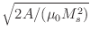
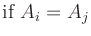
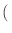
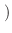
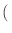
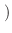

Outputs: For each magnetization configuration, three standard outputs are provided by all energy terms: the scalar output ``Energy,'' which is the total energy in joules contributed by this energy term, the scalar field output ``Energy density,'' which is a cell-by-cell map of the energy density in J/m3, and the three-component vector field output ``Field,'' which is the pointwise field in A/m. If the code was compiled with the macro NDEBUG not defined, then there will be an additional scalar output, ``Calc count,'' which counts the number of times the term has been calculated in the current simulation. This is intended for debugging purposes only; this number should agree with the ``Energy calc count'' value provided by the evolver.
Anisotropy Energy
- Specify Oxs_UniaxialAnisotropy:name {
- K1 K
- Ha H
- axis u
- }
Exactly one of either K1 or Ha should be specified, where K1 is the crystalline anisotropy constant (in J/m3), and Ha is the anistropy field (in A/m). In either case, axis is the anisotropy direction. K1, Ha, and axis may each be varied cellwise across the mesh: K1 and Ha are initialized with scalar field objects, while axis takes a vector field object. (A constant value will be interpreted as a uniform field object having the stated value, as usual.) The axis direction must be non-zero at each point, and will be normalized to unit magnitude before being used.
The axis direction is an easy axis if K1 (or Ha) is >0, in which case the cellwise anisotropy energy density (in J/m3) is given by
Examples: diskarray.mif, stdprob3.mif, grill.mif.
- Specify Oxs_CubicAnisotropy:name {
- K1 K
- Ha H
- axis1 u1
- axis2 u2
- }
Exactly one of either K1 or Ha should be specified, where K1 is the crystalline anisotropy constant (in J/m3), and Ha is the anistropy field (in A/m). In either case, axis1 and axis2 are two anisotropy directions; the third anisotropy axis u3 is computed as the vector product, u1 x u2. For each cell, the axis directions are easy axes if K1 (or Ha) is >0, or hard axes if K1 (or Ha) is <0. All may be varied cellwise across the mesh. K1 or Ha is initialized with a scalar field object, and the axis directions are initialized with vector field objects. (Constant values will be interpreted as uniform fields with the indicated value, as usual.) The axis1 and axis2 directions must be mutually orthogonal and non-zero at each point (u1 and u2 are automatically scaled to unit magnitude before use).
The anisotropy energy density (in J/m3) for cell i is given by
Examples: cgtest.mif, sample2.mif, grill.mif.
Exchange Energy
The Specify block for this term has the form
- Specify Oxs_Exchange6Ngbr:name {
- default_A value
- atlas atlas_spec
- A {
}
- region-1 region-1 A11
- region-1 region-2 A12
- ...
- region-m region-n Amn
- }
or
- Specify Oxs_Exchange6Ngbr:name {
- default_lex value
- atlas atlas_spec
- lex {
}
- region-1 region-1 lex11
- region-1 region-2 lex12
- ...
- region-m region-n lexmn
- }
where lex specifies the magnetostatic-exchange length, in meters, defined by lex = .
In the first case, the A block specifies Aij values on a region by region basis, where the regions are labels declared by atlas_spec. This allows for specification of A both inside a given region (e.g., Aii) and along interfaces between regions (e.g., Aij). By symmetry, if Aij is specified, then the same value is automatically assigned to Aji as well. The default_A value is applied to any otherwise unassigned Aij.
In the second case, one specifies the magnetostatic-exchange length instead of A, but the interpretation is otherwise analogous.
Although one may specify Aij (resp. lexij) for any pair of regions i and j, it is only required and only active if the region pair are in contact. If long-range exchange interaction is required, use Oxs_TwoSurfaceExchange.
In addition to the standard energy and field outputs, Oxs_Exchange6Ngbr provides three scalar outputs involving the angle between spins at neighboring cells:
Examples: grill.mif, spinvalve.mif, tclshapes.mif.
In addition to the standard energy and field outputs, Oxs_UniformExchange provides the three scalar outputs Max Spin Ang, Stage Max Spin Ang, and Run Max Spin Ang as described for Oxs_Exchange6Ngbr. These values are also accessible through the MIF GetStateData command.
Examples: sample.mif, cgtest.mif, stdprob3.mif.
 ,
,
Note that
Aij, eff satisfies
the following properties:
| Aij, eff | = | Aji, eff | |
| Aij, eff | = | Ai  | |
| = | 0. |
The Specify block for Oxs_ExchangePtwise has the form
- Specify Oxs_ExchangePtwise:name {
- A scalarfield_spec
- }
where scalarfield_spec is an arbitrary scalar field object returning the desired exchange coefficient in J/m.
In addition to the standard energy and field outputs, Oxs_ExchangePtwise provides the three scalar outputs Max Spin Ang, Stage Max Spin Ang, and Run Max Spin Ang as described for Oxs_Exchange6Ngbr.
Example: antidots-filled.mif.
- Specify Oxs_TwoSurfaceExchange:name {
- sigma value
- sigma2 value
- surface1 {
}
- atlas atlas_spec
- region region_label
- scalarfield scalarfield_spec
- scalarvalue fieldvalue
- scalarside side
- surface2 {
}
- atlas atlas_spec
- region region_label
- scalarfield scalarfield_spec
- scalarvalue fieldvalue
- scalarside side
- }
Here sigma and sigma2 are the bilinear and biquadratic surface (interfacial) exchange energies, in J/m2. Either is optional, with default value 0.
The surface1 and surface2 sub-blocks describe the two interacting surfaces. Each description consists of 5 name-values pairs, which must be listed in the order shown. In each sub-block, atlas_spec specifies an atlas, and region_label specifies a region in that atlas. These bound the extent of the desired surface. The following scalarfield, scalarvalue and scalarside entries define a discretized surface inside the bounding region. Here scalarfield_spec references a scalar field object, fieldvalue should be a floating point value, and side should be one of <, <=, >=, or >. Any point for which the scalar field object takes a value less than, less than or equal, greater than or equal, or greater than, respectively, the scalarvalue value is considered to be ``inside'' the surface. (Values - and + for side are deprecated synonyms for <= and >=.) The discretized surface determined is the set of all points on the problem mesh that are in the bounding region, are ``inside'' the surface, and have a (nearest-) neighbor that is ``outside'' (i.e., not inside) the surface. A neighbor is determined by the mesh; in a typical rectangular mesh each cell has six neighbors.
In this way, 2 discrete lists of cells representing the two surfaces are obtained. Each cell from the first list (representing surface1) is then matched with the closest cell from the second list (i.e., from surface2). Note the asymmetry in this matching process: each cell from the first list is included in exactly one match, but there may be cells in the second list that are included in many match pairs, or in none. If the two surfaces are of different sizes, then in practice typically the smaller will be made the first surface, because this will usually lead to fewer multiply-matched cells, but this designation is not required.
The resulting exchange energy density at cell i on one surface from matching cell j on the other is given by
The following example produces an antiferromagnetic exchange coupling between the lower surface of the ``top'' layer and the upper surface of the ``bottom'' layer, across a middle ``spacer'' layer. The simple Oxs_LinearScalarField object is used here to provide level surfaces that are planes orthogonal to the z-axis. In practice this example might represent a spinvalve, where the top and bottom layers would be composed of ferromagnetic material and the middle layer could be a copper spacer.
Specify Oxs_MultiAtlas:atlas {
atlas { Oxs_BoxAtlas {
name top
xrange {0 500e-9}
yrange {0 250e-9}
zrange {6e-9 9e-9}
} }
atlas { Oxs_BoxAtlas {
name spacer
xrange {0 500e-9}
yrange {0 250e-9}
zrange {3e-9 6e-9}
} }
atlas { Oxs_BoxAtlas {
name bottom
xrange {0 500e-9}
yrange {0 250e-9}
zrange {0 3e-9}
} }
}
Specify Oxs_LinearScalarField:zheight {
vector {0 0 1}
norm 1.0
}
Specify Oxs_TwoSurfaceExchange:AF {
sigma -1e-4
surface1 {
atlas :atlas
region bottom
scalarfield :zheight
scalarvalue 3e-9
scalarside <=
}
surface2 {
atlas :atlas
region top
scalarfield :zheight
scalarvalue 6e-9
scalarside >=
}
}
In addition to the standard energy and field outputs, Oxs_TwoSurfaceExchange provides the three scalar outputs Max Spin Ang, Stage Max Spin Ang, and Run Max Spin Ang as described for Oxs_Exchange6Ngbr.
Example: spinvalve-af.mif.
- Specify Oxs_RandomSiteExchange:name {
- linkprob probability
- Amin A_lower_bound
- Amax A_upper_bound
- }
Each adjacent pair of cells i, j, is given linkprob
probability of having a non-zero exchange coefficient Aij. Here
two cells are adjacent if they lie in each other's 6-neighborhood.
If a pair is found to have a non-zero exchange coefficient, then
Aij is drawn uniformly from the range
[
In addition to the standard energy and field outputs, Oxs_RandomSiteExchange provides the three scalar outputs Max Spin Ang, Stage Max Spin Ang, and Run Max Spin Ang as described for Oxs_Exchange6Ngbr.
Example: randexch.mif.
Self-Magnetostatic Energy
- Specify Oxs_Demag:name {
- asymptotic_order error_order
- demag_tensor_error relerror
- }
The demag kernel is computed using a combination of analytic formulae for near field terms, high-order asymptotic formulae for far field terms, and summed subdivided cell asymptotic formulae for midrange terms, where the offset R between cell pairs determines the field range (based on extensions of earlier work[18]). The transition R values are selected to give the best computation speed while meeting the error requested by relerror. The demag kernel computation is a one-time operation performed during problem initialization, so the kernel computation time is generally of relatively minor concern, and accordingly the default value for relerror is 1e-15, i.e., nearly full double-precision accuracy.
Asymptotic formulae are used to compute the demag kernel for larger
cell offset pair distances R. By default an expansion with error
 1/R11 is used, but lower orders can be
requested through the error_order option. Valid values for
error_order are 5, 7, 9, and 11, where
error_order=5 is the dipole approximation.
1/R11 is used, but lower orders can be
requested through the error_order option. Valid values for
error_order are 5, 7, 9, and 11, where
error_order=5 is the dipole approximation.
There is also backward support for the now deprecated option asymptotic_radius, which set the cutoff between the analytic and asymptotic computation forms in units of cells. If asymptotic_radius is specified then it is converted to a more-or-less equivalent value for relerror, with the special values of 0 and -1 mapping to relerror=1 and 1e-16, respectively.
The example file demagtensor.mif can be used to extract the computed demagnetization tensor coefficients for a specified cell geometry; see the description at the top of that file for usage details.
Examples: sample.mif, cgtest.mif, pbcbrick.mif, demagtensor.mif.
Example: squarecubic.mif.
Zeeman Energy
The fields specified in the range entry are nominally in A/m, but these values are multiplied by multiplier, which may be used to effectively change the units. For example,
- Specify Oxs_UZeeman {
- multiplier 795.77472
- Hrange {
}
- { 0 0 0 10 0 0 2 }
- { 10 0 0 0 0 0 1 }
- }
The applied field steps between 0 mT, 5 mT, 10 mT and back to 0 mT, for four stages in total. If the first field in the second range sublist was different from the second field in the first range sublist, then a step would have been added between those field values, so five stages would have resulted. In this example, note that 795.77472=0.001/µ0.
In addition to the standard energy and field outputs, the Oxs_UZeeman class provides these four scalar outputs:
Examples: sample.mif, cgtest.mif, marble.mif.
- Specify Oxs_FixedZeeman:name {
- field vector_field_spec
- multiplier multiplier
- }
The default value for multiplier is 1. The field units, after scaling by multiplier, should be A/m.
Examples: spinvalve.mif, spinvalve-af.mif, yoyo.mif.
- Specify Oxs_ScriptUZeeman:name {
- script_args { args_request }
- script Tcl_script
- multiplier multiplier
- stage_count number_of_stages
- }
Here script indicates the Tcl script to use. The script is called once each iteration. Appended to the script are the arguments requested by script_args, in the manner explained in the User Defined Support Procedures section of the MIF 2 file format documentation. The value args_request should be a subset of {stage stage_time total_time base_state_id current_state_id}. The units for the time options are seconds. The two state_id options are intended for use with the MIF GetStateData command; refer to the documentation on that command in the MIF 2.1 section for details. If script_args is not specified, the default argument list is {stage stage_time total_time}.
The return value from the script should be a 6-tuple of numbers, {Hx, Hy, Hz, dHx, dHy, dHz}, representing the applied field and the time derivative of the applied field. The field as a function of time must be differentiable for the duration of each stage. Discontinuities are permitted between stages. If a time evolver is being used, then it is very important that the time derivative values are correct; otherwise the evolver will not function properly. This usual symptom of this problem is a collapse in the time evolution step size.
The field and its time derivative are multiplied by the multiplier value before use. The final field value should be in A/m; if the Tcl script returns the field in T, then a multiplier value of 1/µ0 (approx. 795774.72) should be applied to convert the Tcl result into A/m. The default value for multiplier is 1.
The stage_count parameter informs the Oxs_Driver as to how many stages the Oxs_ScriptUZeeman object wants. A value of 0 (the default) indicates that the object is prepared for any range of stages. The stage_count value given here must be compatible with the stage_count setting in the driver Specify block.
The following example produces a sinusoidally varying field of frequency 1 GHz and amplitude 800 A/m, directed along the x-axis.
proc SineField { total_time } {
set PI [expr {4*atan(1.)}]
set Amp 800.0
set Freq [expr {1e9*(2*$PI)}]
set Hx [expr {$Amp*sin($Freq*$total_time)}]
set dHx [expr {$Amp*$Freq*cos($Freq*$total_time)}]
return [list $Hx 0 0 $dHx 0 0]
}
Specify Oxs_ScriptUZeeman {
script_args total_time
script SineField
}
In addition to the standard energy and field outputs, the Oxs_ScriptUZeeman class provides these four scalar outputs:
Examples: acsample.mif, pulse.mif, rotate.mif, varalpha.mif, yoyo.mif.
The Specify block has the form
- Specify Oxs_TransformZeeman:name {
- field vector_field_spec
- type transform_type
- script Tcl_script
- script_args { args_request }
- multiplier multiplier
- stage_count number_of_stages
- }
The field specified by vector_field_spec is evaluated during problem initialization and held throughout the life of the problem. On each iteration, the specified Tcl script is called once. Appended to the script are the arguments requested by script_args, as explained in the User Defined Support Procedures section of the MIF 2 file format documentation. The value for script_args should be a subset of {stage stage_time total_time}. The default value for script_args is the complete list in the aforementioned order. The time arguments are specified in seconds.
The script return value should define a 3x3 linear transform and its time derivative. The transform must be differentiable with respect to time throughout each stage, but is allowed to be discontinuous between stages. As noted in the Oxs_ScriptUZeeman documentation, it is important that the derivative information be correct. The transform is applied pointwise to the fixed field obtained from vector_field_spec, which is additionally scaled by multiplier. The multiplier entry is optional, with default value 1.0.
The type transform_type value declares the format of the result returned from the Tcl script. Recognized formats are identity, diagonal, symmetric and general. The most flexible is general, which indicates that the return from the Tcl script is a list of 18 numbers, defining a general 3x3 matrix and its 3x3 matrix of time derivatives. The matrices are specified in row-major order, i.e., M1, 1, M1, 2, M1, 3, M2, 1, M2, 2, .... Of course, this is a long list to construct; if the desired transform is symmetric or diagonal, then the type may be set accordingly to reduce the size of the Tcl result string. Scripts of the symmetric type return 12 numbers, the 6 upper diagonal entries in row-major order, i.e., M1, 1, M1, 2, M1, 3, M2, 2, M2, 3, M3, 3, for both the transformation matrix and its time derivative. Use the diagonal type for diagonal matrices, in which case the Tcl script result should be a list of 6 numbers.
The simplest transform_type is identity, which is the default. This identifies the transform as the identity matrix, which means that effectively no transform is applied, aside from the multiplier option which is still active. For the identity transform type, script and script_args should not be specified, and Oxs_TransformZeeman becomes a clone of the Oxs_FixedZeeman class.
The following example produces a 1000 A/m field that rotates in the xy-plane at a frequency of 1 GHz:
proc Rotate { freq stage stagetime totaltime } {
global PI
set w [expr {$freq*2*$PI}]
set ct [expr {cos($w*$totaltime)}]
set mct [expr {-1*$ct}] ;# "mct" is "minus cosine (w)t"
set st [expr {sin($w*$totaltime)}]
set mst [expr {-1*$st}] ;# "mst" is "minus sine (w)t"
return [list $ct $mst 0 \
$st $ct 0 \
0 0 1 \
[expr {$w*$mst}] [expr {$w*$mct}] 0 \
[expr {$w*$ct}] [expr {$w*$mst}] 0 \
0 0 0]
}
Specify Oxs_TransformZeeman {
type general
script {Rotate 1e9}
field {0 1000. 0}
}
The stage_count parameter informs the Oxs_Driver as to how many stages the Oxs_TransformZeeman object wants. A value of 0 (the default) indicates that the object is prepared for any range of stages. The stage_count value given here must be compatible with the stage_count setting in the driver Specify block.
Examples: sample2.mif, tickle.mif, rotatecenter.mif.
The Specify block takes the form
- Specify Oxs_StageZeeman:name {
- script Tcl_script
- files { list_of_files }
- stage_count number_of_stages
- multiplier multiplier
- }
The initialization string should specify either script or files, but not both. If a script is specified, then each time a new stage is started in the simulation, a Tcl command is formed by appending to Tcl_script the 0-based integer stage number. This command should return a reference to an Oxs_VectorField object, as either the instance name of an object defined via a top-level Specify block elsewhere in the MIF file, or as a two item list consisting of the name of an Oxs_VectorField class and an appropriate initialization string. In the latter case the Oxs_VectorField object will be created as a temporary object via an inlined Specify call.
The following example should help clarify the use of the script parameter.
proc SlidingField { xcutoff xrel yrel zrel } {
if {$xrel>$xcutoff} { return [list 0. 0. 0.] }
return [list 2e4 0. 0.]
}
proc SlidingFieldSpec { stage } {
set xcutoff [expr {double($stage)/10.}]
set spec Oxs_ScriptVectorField
lappend spec [subst {
atlas :atlas
script {SlidingField $xcutoff}
}]
return $spec
}
Specify Oxs_StageZeeman {
script SlidingFieldSpec
stage_count 11
}
The SlidingFieldSpec proc is used to generate the initialization string for an Oxs_ScriptVectorField vector field object, which in turn uses the SlidingField proc to specify the applied field on a position-by-position basis. The resulting field will be 2e4 A/m in the positive x-direction at all points with relative x-coordinate larger than $stage/10., and 0 otherwise. $stage is the stage index, which here is one of 0, 1, ..., 10. For example, if $stage is 5, then the left half of the sample will see a 2e4 A/m field directed to the right, and the right half of the sample will see none. The return value from SlidingFieldSpec in this case will be
Oxs_ScriptVectorField {
atlas :atlas
script {SlidingField 0.5}
}
:atlas reference is to an Oxs_Atlas object defined
elsewhere in the MIF file.
The stage_count parameter lets the Oxs_Driver know how many stages the Oxs_StageZeeman object wants. A value of 0 indicates that the object is prepared for any range of stages. Zero is the default value for stage_count when using the Tcl_script interface. The stage_count value given here must be compatible with the stage_count setting in the driver Specify block.
The example above made use of two scripts, one to specify the Oxs_VectorField object, and one used internally by the Oxs_ScriptVectorField object. But any Oxs_VectorField class may be used, as in the next example.
proc FileField { stage } {
set filelist { field-a.ohf field-b.ohf field-c.ohf }
set spec Oxs_FileVectorField
lappend spec [subst {
atlas :atlas
file [lindex $filelist $stage]
}]
return $spec
}
Specify Oxs_StageZeeman {
script FileField
stage_count 3
}
Specifying applied fields from a sequence of files is common enough to warrant a simplified interface. This is the purpose of the files parameter:
Specify Oxs_StageZeeman {
files { field-a.ohf field-b.ohf field-c.ohf }
}
The second difference is that no Oxs_Atlas is specified when using the files interface. The Oxs_FileVectorField object spatially scales the field read from the file to match a specified volume. Typically a volume is specified by explicit reference to an atlas, but with the files interface to Oxs_StageZeeman the file fields are implicitly scaled to match the whole of the meshed simulation volume. This is the most common case; to obtain a different spatial scaling use the script interface as illustrated above with a different atlas or an explicit x/y/z-range specification.
The list_of_files value is interpreted as a grouped list.
The remaining Oxs_StageZeeman parameter is multiplier. The value of this parameter is applied as a scale factor to the field magnitude on a point-by-point basis. For example, if the field returned by the Oxs_VectorField object were in Oe, instead of the required A/m, then multiplier could be set to 79.5775 to perform the conversion. The direction of the applied field can be reversed by supplying a negative multiplier value.
In addition to the standard energy and field outputs, the Oxs_StageZeeman class provides these four scalar outputs:
Examples: sliding.mif, slidingproc.mif, rotatestage.mif, rotatecenterstage.mif.